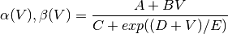

Simulation Layer
Morphforge-contrib currently defines the following types of channels:
Channel-Types
StdChlLeak
StdChlLeak is a leak channel consisting of a constant reversal potential and conductance density.
StdChlAlphaBeta
StdChlAlphaBeta is a HodgkinHuxley type channel that can be constructed directly in Python. The form of the rate constants are:

where A,B,C,D & E are constants.
StdChlAlphaBetaBeta
StdChlAlphaBetaBeta is similar to StdChlAlphaBeta, except that different forms for  can be used for different values for V. (See for example Dale-95)
can be used for different values for V. (See for example Dale-95)
SimulatorSpecificChannel
SimulatorSpecificChannel also MODL code to be use directly within with a NEURON simulation.
NeuroUnits
NeuroUnitEqnsetMechanism allows channels specified in NeuroUnits as strings to be used in morphforge
NeuroML_Via_XSL_Channel
NeuroML_Via_XSL_Channel allows channels specified in NeuroUnits as strings to be used in morphforge.
NeuroML_Via_NeuroUnits_Channel
NeuroML_Via_NeuroUnits_Channel is for internal use for testing a conversion from NeuroML to Neurounits to ensure they give the same simulation results.
PreSynapticTrigger-Types
SynapticTriggerAtTimes
SynapticTriggerAtTimes causes PostSynaptic objects to be triggered at specific times.
SynapticTriggerByVoltageThreshold
SynapticTriggerByVoltageThreshold causes PostSynaptic objects to be triggered when the voltage at a presynaptic location crosses a particular threshold.
PostSynapticTemplate-Types
Todo
THIS!
NeuroUnits
PostSynapticMech_ExpSyn_Base
PostSynapticMech_ExpSyn_Base
PostSynapticMech_Exp2Syn_Base
PostSynapticMech_Exp2Syn_Base
PostSynapticMech_Exp2SynNMDA_Base
PostSynapticMech_Exp2SynNMDA_Base
Stimuli-Types
CurrentClampStepChange
CurrentClampStepChange
CurrentClampSinwave
CurrentClampSinwave
VoltageClampStepChange
VoltageClampStepChange